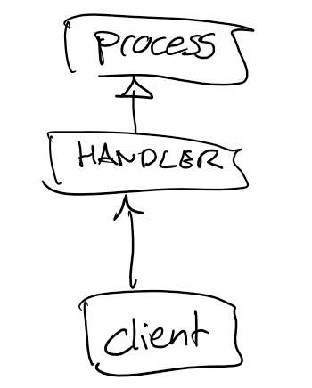

Design Discussion
When designing the Triarc Framework, one of the goals was approachability and ease of use while retaining the full power of the actor model. Software design is always about making trade offs, and in order to make the readability higher some trade offs have been made. This document discusses the most important of theses.
Values and Design Principles
The core values and design principles employed by TF are discussed in this section.
Let the data flow
The concept of data flow is one of the key strengths of LabVIEW and should be embraced. Passing data by value is to prefer as default, over passing data by reference.
Processing in the Process
All major processing should take place within the process. This makes API calls fast and reliable, while protecting the consitency of the process state.
Messaging
Information is exchanged between processes using asynchronous messaging. All messages have equal priority, to reduce unnecessary complexity. The handling of each message should be atomic, i.e should not be spread out over multiple states.
No Global Mutable State
By avoiding any kind of global mutable state, applications become more robust and easier to understand and reason about. It is also a prerequisite for effective testing, as tests would interfere if they were to share global resources. This means that global variables, functional global variables (FGVs), named queueus, etc. are prohibited.
Strict Typing
By using strictly typed APIs, errors can be detected at compile time and the consequence of changes to a data type is clearer. API:s should therefore use strict typing whenever possible.
Open to Extenssion
Classes are to be open for extenssion without modifying the base, while keeping the base behaviour unchanged. Triarc provides mechanisms for overriding behavior by either overriding dynamic dispatch VI:s or by handling messages defined by parent processes.
Everything in its Own Context
The lifecycle of every process running in an application is managed by the owning context. What is initialized must be cleared. What is started must be stopped.
Testing over Debugging
While the framework comes with a capable debugger, using it should however be relatively rare. Good test coverage is always to prefer and it is much more effective to debug a limited test case than a complete application.
Separation of Enqueuer and Actor
The main design difference between Actor Framework (AF) and Triarc Framework (TF) is how the enqueuer concept is implemented. In AF messages are sent by calling VI:s on the enqueuer object associated with the actor. This is done to protect the state data of the actor, by making it impossible to access it from the enqueuer object.
In TF the enqueuer and process classes are deliberately not separated from each other. This puts the responsibility on the developer to not access the data outside the Handle Messages.vi. Utilities are provided to determine whether a VI is called within the process or not, and in practice it is not difficult.
Orders of Complexity
The reason why the enqueuer is not extracted as a separate class or interface in TF is because it comes with a cost. Doing it introduces a lot of complexity as in the AF case messages needs to be defined in separate classes, nesting calls to public methods on the receiving actor.
Making an AF Actor called Actor A do something requires the caller to determine that the something message is compatible with Actor A.
If the message calles a dynamic dispatch method on a parent of Actor A, the Actor A may override this VI to change what something it does.
The call structure would look something like the diagram below.

In TF the corresponding action is simply to call the something API VI on the Process.
If the process cannot do something the run arrow will be broken.
The call hierarcy is much simpler, as shown below.

Semantics
There is a slight but important semantic difference in how you interact with an AF Actor compared to a TF Process.
When you want an AF Actor to do something, you enqueue a message to the actor using its enqueuer. You should know that the actor can handle the message you send it, or you will get a nasty run-time error. There is thus an implicit coupling between the actor and the message, even if there might not be any source code coupling from the actor to the message.
When you want a TF Process to do something, you make an API call on the process object. Under the hood, the API call enqueues a message to the Process, but the coupling is made explicit.
Priority Queues
Some frameworks give the option of sending messages with different priority levels. This adds significant complexity to the application since it increases the number of possible paths through the application. There are situations where a different priority message is usefull, but they should be rare.
Triarc provides the option of terminating a process by clearing it, so there is no need to send a high priority shutdown message. If it is not an emergency shutdown, it is in most cases better to shut down normally by stopping it and allowing each process to perform potential clean-up.